충남대학교 컴퓨터공학과 김현수 교수님의 "소프트웨어 공학" 강의를 필기한 내용입니다.
다소 잘못된 내용과 구어적 표현 이 포함되어 있을 수 있습니다.
유스케이스 모델링
- 얘는 요구사항을 좀 더 명확하고 많이 수집하기 위해 사용한댄다
- 일단 유스케이스라는 것은 사용사례라고도 하는데 사용자가 어떠한 요청을 할 수 있고, 그 요청에 대해 어떠한 처리가 이루어지고, 그로인해 어떠한 결과를 사용자에게 주어 사용자가 어떠한 경험을 하게 되는지를 명세한 것이라고 할 수 있다
- 즉, 시스템이 어떤 기능(function, service)을 제공하는지, 그리고 그 기능들은 어떠한 프로세스로 이루어지는지 설명한 것이라고도 말할 수 있는것
- 걍 시스템이 제공하는 기능들 각각을 유스케이스라고 생각하면 될듯
- 대충 뭔지 감은 오제?
- 뭐 피피티에는 프로세스에 대해서 조직이나 개인 사용자에게 가치 있는 것을 생산하기 위해 필요한 사건, 행동, 거래의 연속 이라고 어려운 말을 적어놨는데 그냥 처리 과정이라고 심플하게 이해해도 될거같음
- 그리고 이렇게 보면 시나리오와도 비슷한거같다는 느낌을 받을 수 있는데
- 실제로는 시나리오는 어떠한 목표를 위해 수행되는 일련의 행동이고 가능한 모든 시나리오를 모은 것을 유스케이스라고 한댄다
- 즉, 시나리오는 유스케이스의 한 원소인 셈
- 뭔소린지 감이 안온다면 예시 보면 감이올거임
- 계좌 출금 요청 이라는 유스케이스는 잔고가 충분한 계좌에서의 출금 이랑 잔고가 부족한 계좌에서의 출금 이라는 시나리오들로 구성될 수 있는 것
유스케이스의 목적
- 기능 요구사항(시스템이 뭘 해야하는지)를 명확하고 일관된 설명으로 제공하고자 하는 것에 그 목적이 있다
- 그리고 이러한 가능 요구사항을 개발자들에게 전달해 개발과정에 도움이 되고자 하는 것이며
- 유스케이스는 테스트 케이스를 작성하는데에도 참고할 만한 자료가 되고
- 뭐 기능 요구사항에서 프로그램적인 클래스나 메소드들을 도출해 내는 과정에도 도움이 되고
- 유스케이스 모델을 변경해서 시스템을 변경하거나 확장하는 것을 단순화핫할 수도 있댄다
- 유스케이스 모델링을 하고 나면 Usecase Diagram과 Usecase Description두가지의 결과물이 산출된다
Usecase Diagram, Description
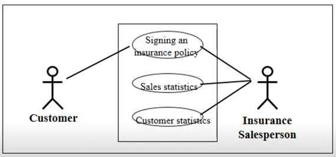
- 일단 가운데 네모가 시스템 이고
- 네모 안에 들어가있는 동그라미들이 시스템이 제공하는 기능(유스케이스) 이다
- 그리고 양옆에 사람이 있는데 얘네들은 사용자(Actor) 이다
- 위의 예시를 보면 일반 사용자는 첫번째 기능을 사용할 수 있고 뭐 보험사 직원같은 경우에는 세가지 기능을 다 사용할 수 있는 것을 한눈에 볼 수 있다
- 즉, 시스템이 제공하는 기능과 그 기능을 어떤 사람들이 이용하는지 그림으로 나타낸 것을 Usecase Diagram이라고 하더라
- 단, 이때의 기능은 사용자 관점에서의 기능들만 명시하게 된다
- 뭐 위의 그림에서도 쉽게 알 수 있듯이 시스템, 기능, 사용자 세개의 구성요소로 이루어진댄다
- 그리고 각각의 그림에 대한 자세한 설명을 하는 부분을 Usecase Description이라고 한댄다
유스케이스 모델링 절차
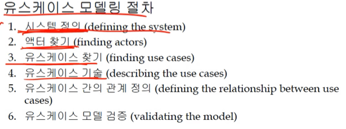
1. 시스템 정의
- 어떤 기능들이 시스템에 포함되고, 어떤것들이 들어가지 않는지를 기술하는 것
2. 액터 찾기
- 액터라는 것을 위에서는 그냥 사용자라고 대충 말했지만, 좀 더 정확하게 말하면 시스템을 사용하는 객체의 역할이라고 말할 수 있음
- 시스템을 사용하는 사람이 아닌 객체라고 표현한 것은 사용하는 주체가 사람일 수도 있지만 하드웨어일 수도 있고, 다른 시스템일 수도 있기 때문이고
- 역할이라는 말뜻은 아래의 예시 보면 좀 감이 올거다
- 은행 시스템의 경우에 대출을 담당하는 사람은 대출 담당 역할 을 맡고 있는 것이고
- 해당 은행에 계좌를 가지고 이용하는 사람은 고객의 역할 을 맡고 있는 것
- 뭐 역할이라는 말의 의미를 분류, 그룹의 뉘앙스로 이해해도 될거같음
- 액터는 주 액터 - 기능을 사용하고 결과를 받아보는 대상과 부 액터 - 기능이 잘 작동하게하기 위해 지원해주는 대상으로 분류할 수 있댄다
- 그리고 유스케이스는 해당 유스케이스를 처음에 작동시키는 Initiating actor와 유스케이스를 사용하는 Participating actor가 있더라
- 여기서 Initiating actor가 반드시 필요하다는 사실에 주목할 것 - 해당 유스케이스를 개시/작동시키는 액터가 반드시 있어야 된다
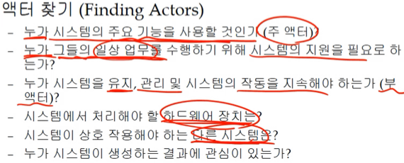
- 액터를 찾는 것은 위의 그림에 나와있는 고민을 해보면 된다
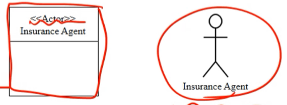
- 액터는 위의 그림처럼 졸라맨으로 그리거나, Actor 클래스로 표현한다
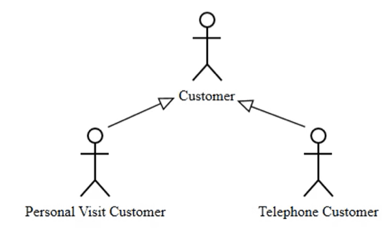
- 그리고 위처럼 상속관계를 이용해 일반화된 액터를 표현하는 것도 가능하다
- 액터들의 공통점을 생각해 하나의 액터로 일반화시키는 것
3. 유스케이스 찾기
- 유스케이스를 찾기에 앞서 유스케이스가 만족해야 하는 특징들 몇가지를 다시 한번 정리해보면
- 반드시 액터에 의해 개시되어야 함
- 액터에게 결과를 제공해야함
- 어떤 기능의 일부분만 제공하는 것이 아닌 특정 기능의 전부를 제공하는 완전한 형태여야 함 - 요청과 그에 대한 결과가 명확하게 드러나야된다는 것
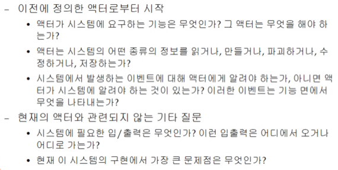
- 유스케이스를 찾을때는 위의 질문들을 생각하면서 어떤 유스케이스가 있을지 고민해보면 된다
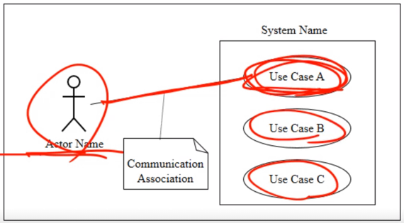
- 유스케이스를 찾고 나서는 위에서 설명한 Usecase Diagram을 통해 그림으로 표현한다
4. 유스케이스 기술(Description)
- 유스케이스의 기술에는 다음과 같은 것을 포함시키면 된다
- 유스케이스가 달성하고자 하는 궁극적인 목표
- 유스케이스의 개시와 관련된 것 - 방법, 조건 등등
- 전형적인 처리 순서(Typical flow) - 정상적으로 작동할때의 처리순서
- 예외적인 처리순서(Alternative flow) - 뭐 어떤 에러가 발생했다던지 그러한 경우에의 처리 - 이건 너무 자세히 적지 말아야 한댄다
- 유스케이스가 완료되어 결과물을 액터에게 전달하는 방법, 시점, 조건 등
- 유스케이스를 작성할때는 텍스트로 표현하거나, 플로우 차트등을 이용한 시각자료인 Activity diagram등을 활용할 수 있다
- 또한 일정한 템플릿(형식) 을 만들어놓고 활용할 수도 있다
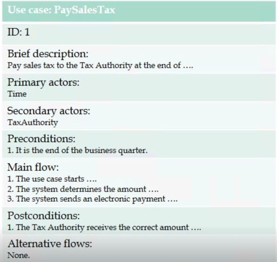
- 뭐 이런식으로 템플릿을 정해서 하면 된댄다
- 위의 그림을 좀 자세히 보면
- Brief description에 뭐 유스케이스의 목표라던지 그런게 들어가고
- Secondary actor는 굳이 안적어도 되고
- Precondition은 유스케이스의 개시 조건을 말하는거고
- Main flow는 뭐 니가 생각하는 그거 맞고
- Postcondition은 유스케이스의 종료조건을 말하는거고
- Alternative flow도 위에서 설명한 그거다
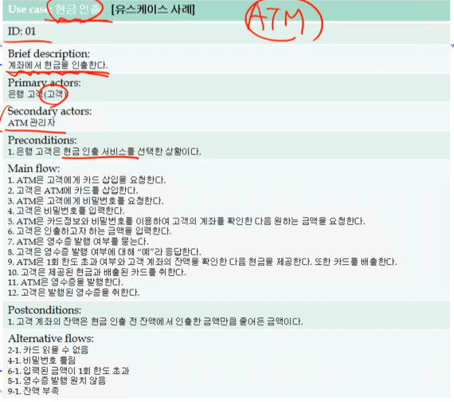
- 뭐 예시 한번 읽어보면 이해될거임
5. 유스케이스 간의 관계 정의
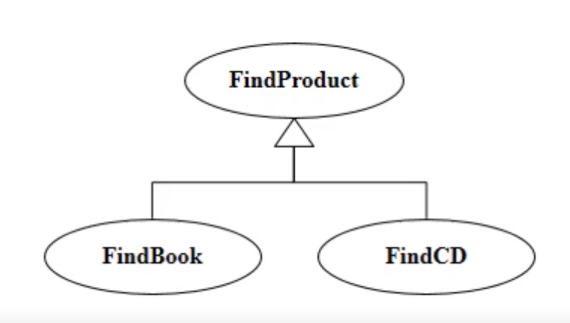
- 일반화(Generalization) : 니가 생각하는 상속 말하는거 맞음
- 뭐 부모의 플로우나 그런것들을 다 물려받고
- 자식 유스케이스에서는 부모의 유스케이스 플로우에 과정을 추가할 수 있고(Override의 개념)
- 부모 유스케이스를 사용할 수 있는 곳에는 자식 유스케이스로 대체할 수 있는 등
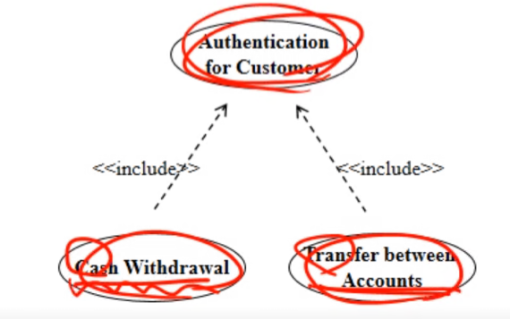
- 포함 관계(Include Relationship) : 공통적으로 수행하는 플로우를 묶는것
- 뭐 상속과 비슷하기는 하다고 생각할 수 있는데 상속은 의미적인 부분에서 일반화시키거나 구체화하는 것인 반면
- 포함관계는 의미적으로는 관련이 없지만 공통된 절차가 들어있다면 그것을 모으는 것을 의미함
- 뭐 위의 예시 보면 뭔소린지 감올거임
- 상속은 말그대로 클래스 상속이라고 생각하면 되고 포함관계는 마치 공통된 코드를 함수를 만들어 분리하는 것의 차이 정도로 생각하면 된다
- 함수를 만들어 분리하는 것과 유사하기 때문에 유스케이스의 진행 플로우 중간에 다른 유스케이스를 포함하는 것이 가능하다 - 코드 실행 중간에 함수를 호출해 그쪽으로 흐름이 넘어가는 것과 유사
- 그리고 포함되는 유스케이스가 완전할 경우에는 일반적인 유스케이스처럼 액터의 개시에 의해 즉시 사용 가능하지만 완전하지 않은 불완전한 유스케이스인경우에는 액터가 직접적으로 개시하는 것은 안된다
- Including use case = Base use case
- Included use case = Inclusion use case
- 그리고 당연히 Base usecase의 경우에는 Inclusion usecase의 플로우를 필요로 하기 때문에 Base usecase없이는 불완전한 유스케이스가 된다
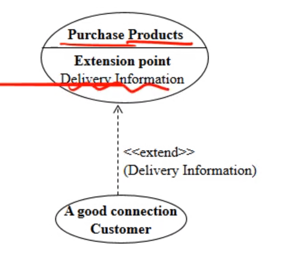
- 확장관계(Extension Relationship) : 이것도 일반화 관계랑 좀 유사하다
- 플로우를 진행하다가 특정 지점에서 특정 조건을 만족하면 추가적인 플로우를 진행한 후 원래의 플로우로 돌아갈 때 그 추가되는 유스케이스를 Extension Usecase라고 하고, 원래의 유스케이스를 Base Usecase, 그리고 이 둘의 관계를 확장관계라 하더라
- 이것도 플로우의 중간에 흐름이 달라진다는 면에서는 포함관계와 어느정도 유사하다고 볼 수 있지만 포함관계의 경우에는 공통된 부분을 묶는 것에 관심이 있었으면, 얘는 특정 조건시에만 호출되어야 하는 분기문 정도로 생각할 수 있음
- Base Usecase에 추가되는 지점을 Entension Point라고 한다
- 특정 조건이 맞아야 확장된다는 특징은 Alternative flow를 모델링하는데에도 사용할 수 있다
- 그리고 포함관계와 또 다른 차이점은 포함관계는 Base usecase만으로는 불완전하지만 확장관계의 경우에는 Base usecase만으로도 독립적으로 작동하는 완전한 유스케이스라는 것이다
- 당연히 Extension usecase는 파편이기 때문에 보통 불완전하다
6. 유스케이스 검증
- 올바르게, 만들어진 명세에 따라, 고객 또는 최종 사용자의 요구를 충족시키는 방향으로 개발되었는가를 확인(Verification), 검증(Validation) 하는 것
- Usecase work through라는 과정을 통해 검증할 수 있다
- 이것은 액터 그룹, 시스템 그룹을 나누어 역할극을 하고 역할극에 참여하지 않은 사람들이 보고 결함을 찾으려고 노력하는 하나의 방법론이다
Usecase Realization
- 유스케이스를 프로그램으로 구현하는 것
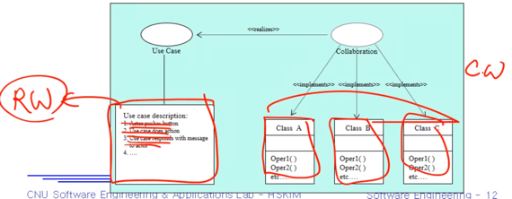
- 실제 세계(RW, Real World)에서의 유스케이스들이 컴퓨터 세계(CW, Computer World)에서 어떻게 구현되는가를 보이는 것
- 뭐 당연한 얘기지만 하나의 유스케이스는 다양한 클래스들과 오퍼레이션(함수)들을 조합하여 완성된다
주의할 점
- Actor generalization, Use case generalization, including, extending등의 방법은 최대한 자제해야 한다 - 모델을 단순화하는 것이 명확하게 드러나고 이해관계자들이 그렇게 하는 것의 의미에 대해 이해할 수 있을 때에만 수행해래는 의미
Actor Generalization
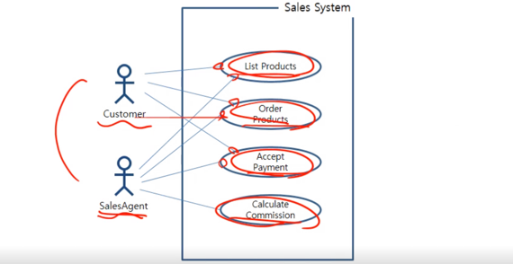
- 이걸
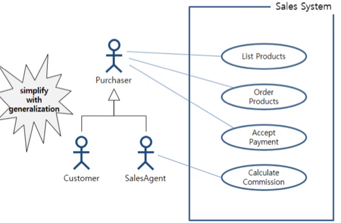
- 이렇게 바꿈
- 보다시피 일반화를 해서 다이어그램이 단순해 지는것이 명확할 때만 사용해야 된다는 것 기억해라
Include Relationship
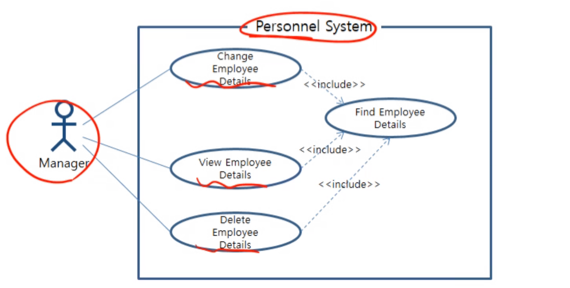
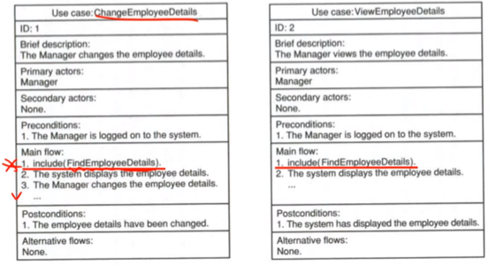
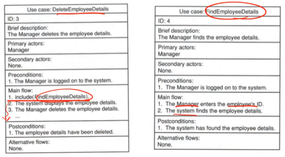
- 위처럼 사용할 수 있는데 이것도
- 다이어그램이 단순화되는 것이 명확할 때만 사용해야 한다
- Include관계에서 주의해야 할 점이 기능을 최대한 쪼개서 include하는 것을 지양해야된다는 것(Avoid Decomposition)이다
- 최대한 쪼개려 하지 말고 액터가 바라보는 기능단위로 유스케이스들을 구성하는게 바람직하다더라
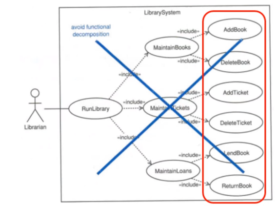
- 위의 그림처럼 하나의 루트에서 시작해서 각기 뻗어나가거나 너무 많은 계층 구조를 가지게 되는 것은 바람직 하지 않고
- 계층구조가 많아봐야 2단계로 이루어지는 상태가 바람직하다더라
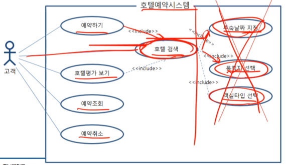
- 위의 그림처럼 너무 세부적인 기능을 유스케이스로 만드는 것도 피해야 된다
Extend Relationship
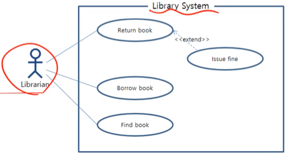
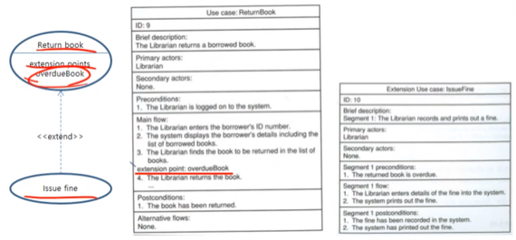
- 위처럼 사용할 수 있는데 이것도
- 다이어그램이 단순화되는 것이 명확할 때만 사용해야 한다
유스케이스 순서화를 피해라
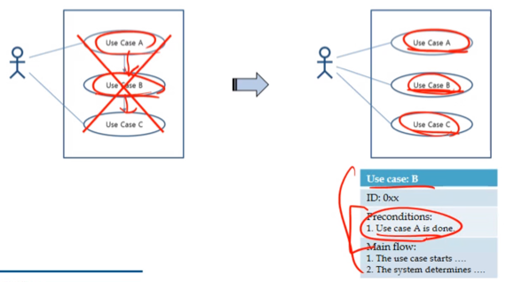
- 위의 그림처럼 순서가 중요한 경우에는 그것을 유스케이스 다이어그램에 표현하지 말아야 한다
- 순서가 필요한 경우에는 Use case description의 precondition을 이용해라
작성시에의 팁
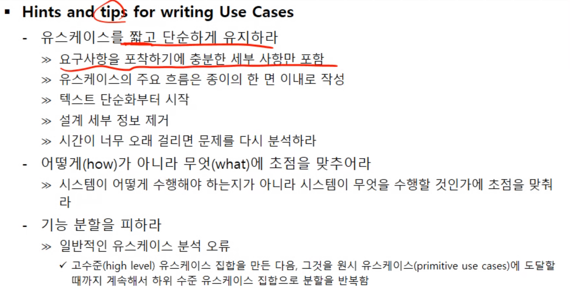
- 위의 그림에서도 주목해야 할 것은
- 유스케이스 모델링도 요구사항 명세의 하나의 과정이기 때문에 How가 아니라 What에 집중해야 된다는 것과
- 위에서 설명한거처럼 더이상 분할이 안될때까지 기능을 분리해서 작성하는 것이 아닌 액터가 바라보는 기능 단위로 유스케이스 작성을 해야된다는 것이다